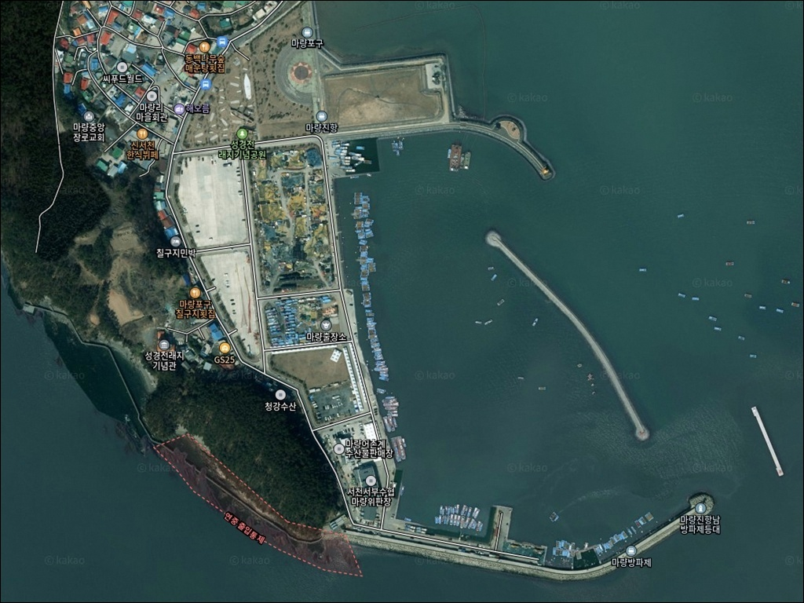
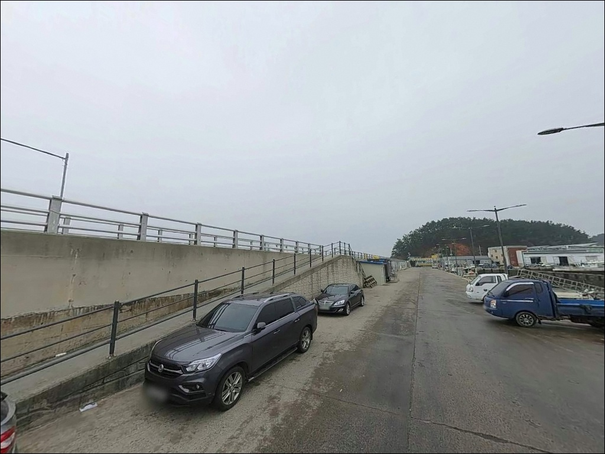
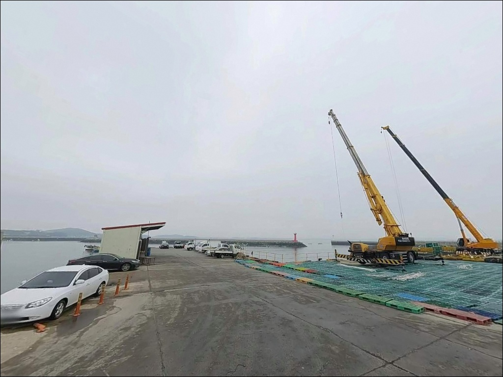
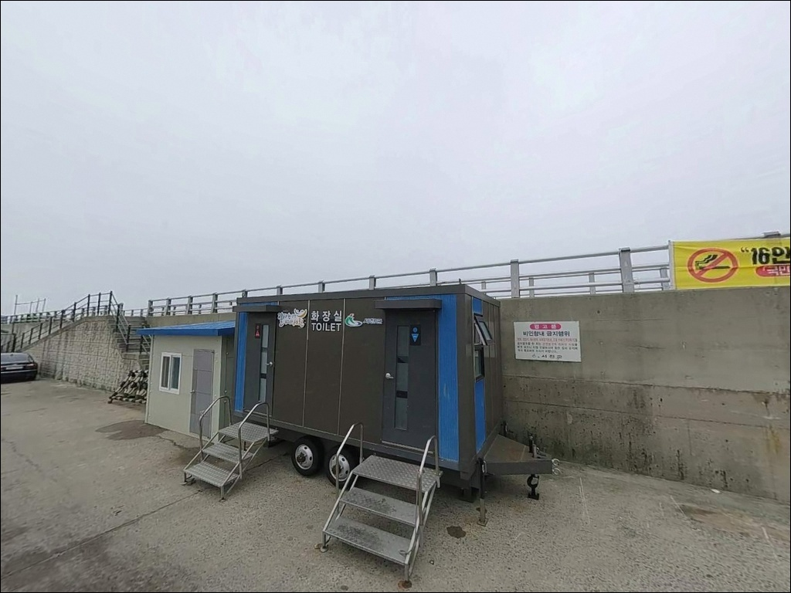
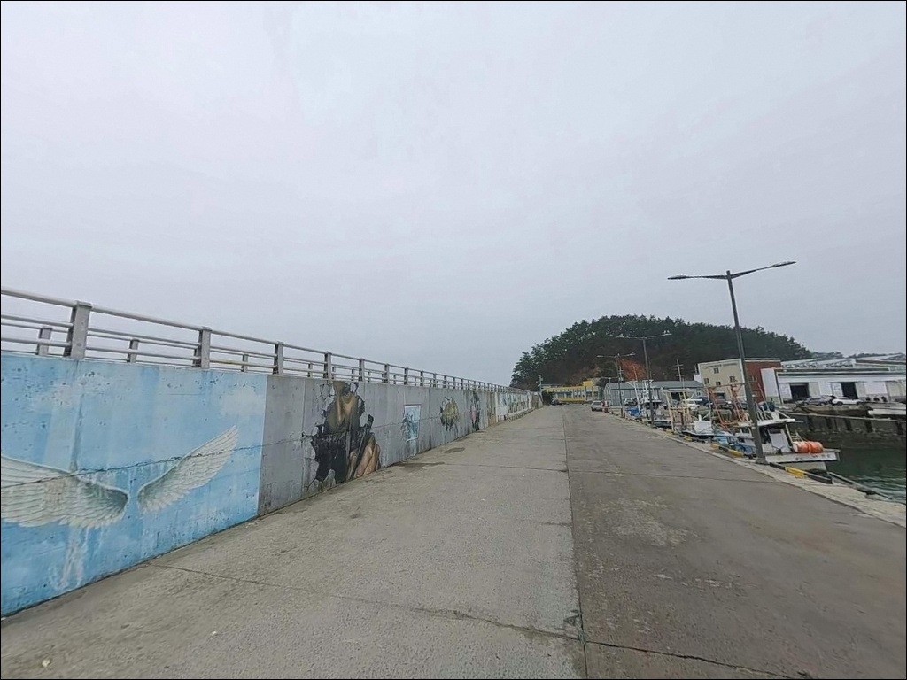
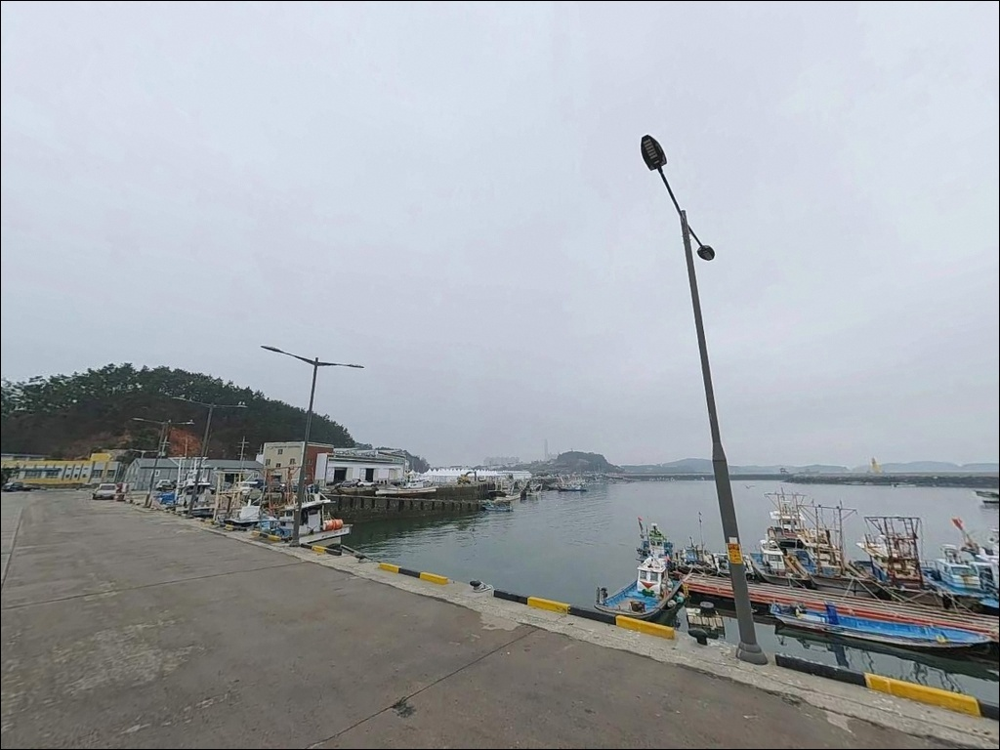
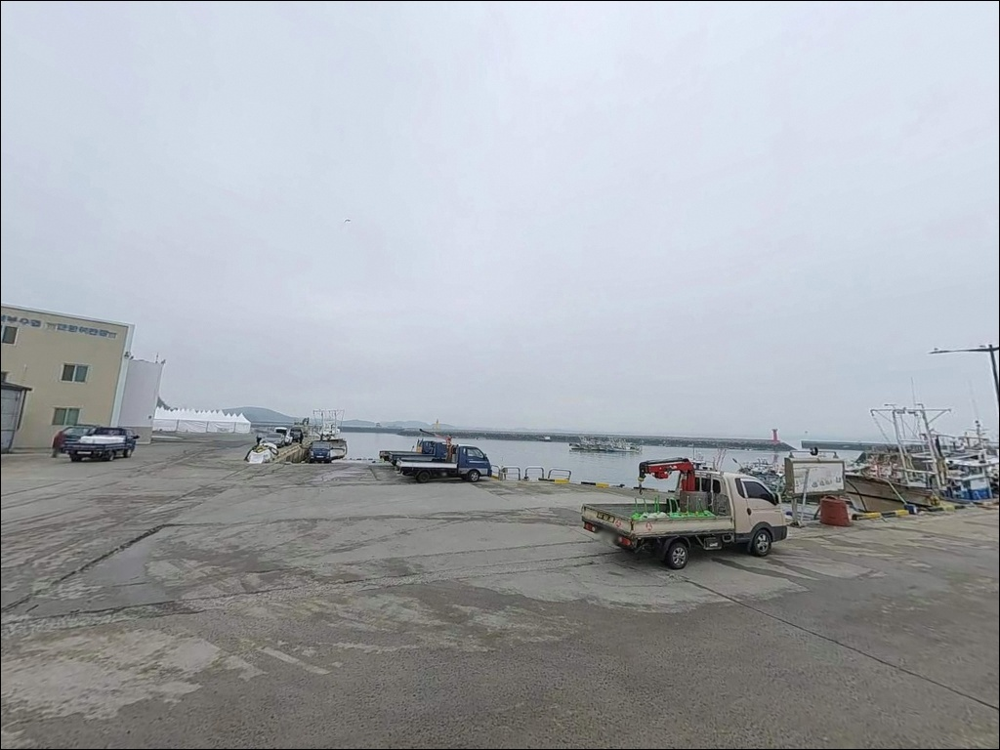
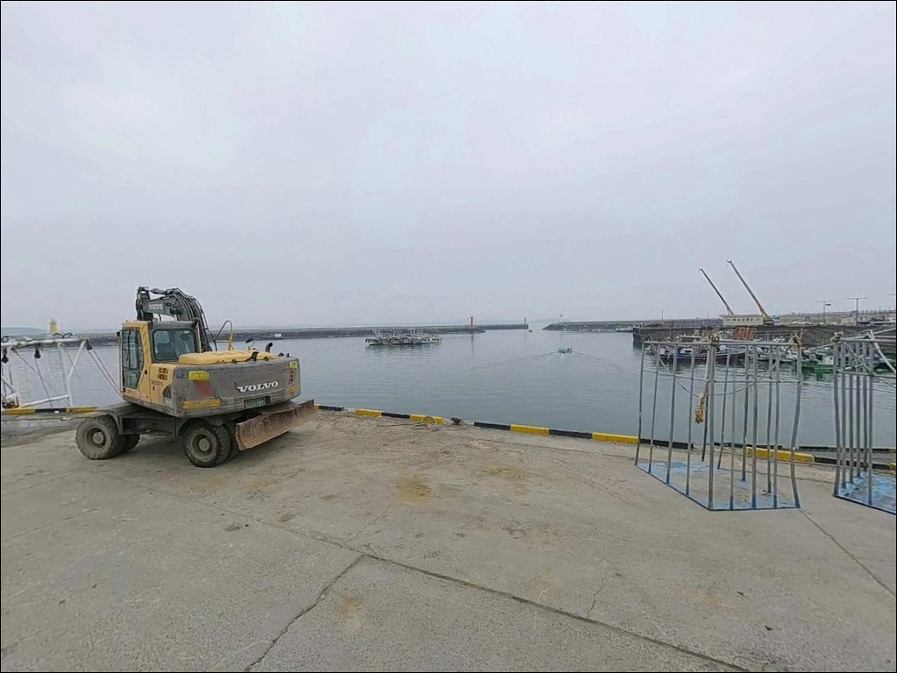
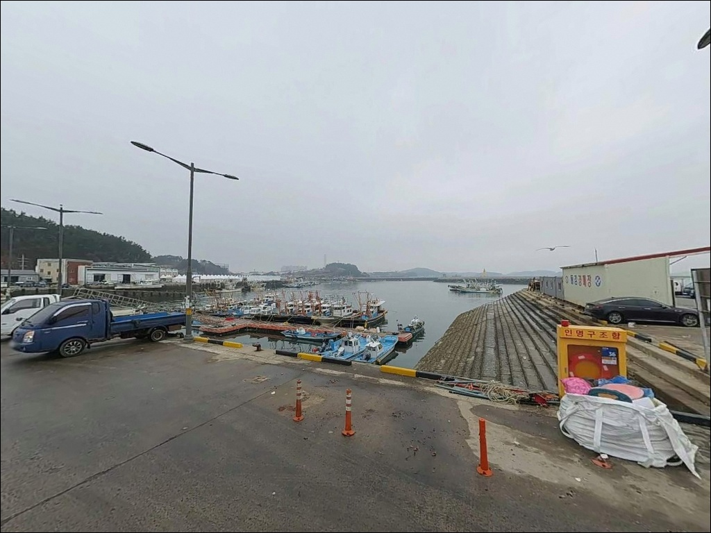

마량진항, 마량방파제, 충남 서천군 고요한 수면을 바라보며 차박, 낚시를 즐기기 좋은 해안


포인트 안내
마량진항
충남 서천군 서면 마량리
처음 방문하는 낚시인 중에는
포구 주변 갯바위나 동백정 방파제 쪽으로
자리를 옮기려다 출입통제 안내판 앞에서
발길을 돌리는 경우가 있습니다.
이 구역은 연안사고 예방에 관한 법률에 따라
연중 출입통제로 지정된 구역으로,
진입 시 100만 원 이하 과태료 대상입니다.
포구 본체 방파제를 기준으로 자리를 잡는 것이
마량진항 낚시의 출발점입니다.
이 글은 포구 본체 방파제를 기준으로
마량진항의 진입 환경, 차박 여건,
물때 판단 기준, 낚시 스타일별 공략 조건에
집중합니다.
갯바위·동백정 방파제 구간과
조황 단정은 이 글의 범위에 포함되지 않습니다.

1. 진입 동선과 차량 접근 여건
충남 서천군 서면 서인로를 따라
마량진항까지 이어지는 접근로는
왕복 2차선 포장도로입니다.
급경사나 비포장 구간 없이
포구까지 차량이 직접 진입하는 구조로,
대형 SUV나 캠핑 장비를 갖춘 차량도
진입 자체에 큰 무리는 없는 편입니다.
포구 내 공터와 선착장 인근이
주차 후보 공간입니다.
행사 기간에는 서천군 서면개발위원회 기준으로
무료 주차 공간이 운영된 이력이 있으며,
공원과 기념관 쪽에도
포장 주차 공간이 갖춰져 있습니다.
다만 어선 접안 구역과 혼재될 수 있으므로
하역 공간을 피해 자리를 잡는 것이
기본 매너입니다.
포구 내부 공간이 비교적 넓어
대형 차량도 방향 전환에
큰 어려움은 없는 편입니다.
진입로 주변 공터도 활용 가능한 수준입니다.

2. 차박 환경과 야간 체류 조건
마량진항은 해넘이·해돋이 명소로 알려진
관광 포구입니다.
동백꽃·주꾸미 축제 등 지역 행사가 열리는 곳이어서
주말이나 행사 기간에는
낮 동안 유동 인구가 상당합니다.
야간이 되면 관광객 이동이 줄어
상대적으로 조용해지는 편이지만,
공식 차박 허용 구역 여부는
현장 안내판과 서천군 문의를 통해
사전 확인하는 것이 안전합니다.
바다를 좌우로 품는 돌출 반도 구조의 지형 특성상
바람 영향을 받는 날이 있습니다.
너울이나 강풍이 더해지면
차박 환경이 불편해질 수 있으므로
기상 예보는 출발 전날 재확인하는 것이 좋습니다.
공원 구역에는 가로등이 일부 설치되어 있지만
방파제 끝단 방향으로 갈수록
어두워지는 구조이므로
개인 조명은 별도로 준비해야 합니다.
낚시 이후 간단히 대기하는 용도로는
나쁘지 않은 공간이지만,
조용한 야간 체류가 목적이라면
관광지 성격이 약한 인근 포구나
해수욕장 쪽이 더 적합할 수 있습니다.


3. 주변 편의시설과 인프라
마량진항 인근에는 서천군 수산물센터가 위치해
제철 수산물 구입과 식사가 가능합니다.
반경 2~3km 거리의 홍원항 방향으로 이동하면
편의점과 수산물 전문 식당가가 밀집해 있어
식재료와 낚시 소품 보충에 활용할 수 있습니다.
포구 입구 주변에는 한국 최초 성경전래지 기념공원과
마량리 동백나무숲(천연기념물)이 인접해 있습니다.
응급 상황 대비는 출발 전
서천군 보건소 위치를 미리 확인해 두는 것이 좋습니다.
낚시 소품이 부족할 때는
홍원항 방향 인근 시설을 이용하는 편이
효율적입니다.
완전 자급 체제로 진입하기 어렵다면
홍원항을 기점으로 삼고
마량진항으로 이동하는 동선이
현실적인 방법입니다.

4. 방파제 자리 잡기 전 반드시 확인할 것들
서해 방파제 낚시에서 가장 기본이 되는 확인 사항은
물때입니다.
마량진항 일대는 서해 특성상 조수간만의 차가 크고,
내항 쪽은 간조 시 수심이 크게 낮아지는
구간이 생기는 편입니다.
바다타임에서 서천 마량리 기준 물때를 사전 확인하고,
들물 전후 또는 만조 전후 타이밍을
중심으로 출발 시각을 조정하는 것이
조과를 만드는 기본 전략입니다.
선착장과 하역 구역에는 어선이 접안하는 경우가 있습니다.
주차 후 진입 동선을 먼저 확인하고
어선 작업 공간과 겹치는 자리는
피하는 것이 기본입니다.
방파제 낚시 시에는 구명조끼 착용이 필수이며,
서해 특성상 조류가 빠를 때
차량을 바다 가장자리에 가깝게 주차하는 것도
주의가 필요합니다.
야간 출조 시에는 방파제 발판 상태와
끝단 접근 구간을 조명으로 반드시 확인해야 합니다.
헤드랜턴과 구명조끼는
야간 방파제 낚시의 기본 장비입니다.

5. 지형 기반 낚시 여건 분석
마량진항은 서해 쪽으로 돌출된 반도 지형의 포구입니다.
포구 좌우로 바다가 열려 있는 구조여서
내항 방향과 외항 방향이 모두 확보되는
독특한 환경을 갖추고 있습니다.
이런 구조에서는 조류가 양방향에서 영향을 주는
조건이 형성되고,
방파제 끝단 쪽에서
수심 변화가 뚜렷하게 나타나는 경향이 있습니다.
방파제는 끝단으로 갈수록 수심이 깊어지는 패턴으로,
외항 쪽 끝단에서는 4~7m 수준의 수심이 확보됩니다.
원투 채비를 멀리 던지면
최대 10m 안팎까지 기대해 볼 수 있는 구간입니다.
방파제 상판은 산책로와 포토존이 조성된
정비된 구조로, 발판이 비교적 안정적입니다.
내항은 수심이 얕은 편으로,
간조 시에는 채비를 운용하기 어려운 구간이 생깁니다.
내항 석축 하단부나 방파제 하부 구조물 주변은
소형 루어나 민장대 구멍치기로
바닥 어종을 노려볼 수 있는 지형입니다.
계절별 조황 정보는 방문 전
마량포구 조황 또는 홍원항 조황을
검색해 보시기 바랍니다.


6. 어울리는 낚시 스타일
원투낚시가 이 포인트에서 가장 잘 맞는 방식입니다.
방파제 외항 쪽은 조류가 직접 닿는 구간으로,
채비를 멀리 보내 바닥을 탐색하는 방식에
유리한 조건입니다.
들물 전후에 수심이 확보되면
도다리·보리멸·붕장어(야간) 등
바닥 어종을 기대해 볼 수 있는 지형입니다.
찌낚시도 이 포인트 구조에 잘 맞는 방식입니다.
방파제 외항 쪽과 테트라포트 구간 인근에서
찌를 세우는 방식은
감성돔·숭어를 비롯한 다양한 어종을
노릴 수 있는 조건입니다.
봄·가을 시즌에 찌낚시를 즐기는 낚시인들이
꾸준히 찾는 서해 방파제 포인트입니다.
루어낚시와 에깅도 시도해 볼 만한 방식입니다.
방파제 끝단과 석축 주변에서
소형 루어로 우럭을 탐색하거나,
가을 시즌에 주꾸미·갑오징어 에깅을 병행하는 방식이
이 포구 지형 조건과 어울립니다.
내항 석축 하단부는 민장대 구멍치기로
망둥어나 소형 우럭을 노려볼 수 있는
근거리 자리이기도 합니다.

7. 대안 포인트와 플랜 B
마량진항 자리가 여의치 않거나
관광객으로 혼잡할 때
가장 먼저 이동할 곳은 홍원항입니다.
서인로 방향으로 약 3~5km 거리에 위치한 홍원항은
서천 권역에서 규모가 가장 큰 낚시 거점으로,
방파제 발판이 안정적이고
릴찌낚시·원투낚시 위주의 자리가
넓게 분포해 있습니다.
홍원항 마리나방파제도
같은 권역의 대안 자리입니다.
망둥어·우럭·감성돔·학공치·숭어가
기대 어종으로 거론되는 방파제로,
릴찌낚시와 원투낚시에 적합한 구조입니다.
마량진항을 처음 찾는다면
홍원항을 기점으로 삼고
마량진항을 병행 탐색하는 동선이
서천 권역 낚시 원정에서 효율적입니다.
차박 여건이 더 안정된 공간을 원한다면
춘장대해수욕장 방향이 대안입니다.
차량으로 약 10분 거리로,
공식 해변 시설과 주차 공간이 갖춰져 있어
관광 포구보다
조용하고 체계적인 차박이
가능한 환경입니다.

준비한 만큼 달라지는
서해 방파제 포인트입니다
원투낚시와 찌낚시를 즐기는 낚시인이라면
마량진항 방파제 끝단 구조는
충분히 매력 있는 자리입니다.
다양한 낚시 방식을 상황에 따라 전환하며
운용하기 좋고,
홍원항과 연계한 이동 동선을 계획하면
서천 권역 낚시 원정 효율이 높아집니다.
갯바위와 동백정 방파제 출입통제구역을
미리 파악하지 않으면
현장에서 자리 선정 자체가 꼬이는 포인트입니다.
물때 계산, 출입통제구역 확인,
야간 조명 준비,
이 세 가지를 갖추고 간다면
서해 방파제 낚시로 기억에 남는
출조가 될 수 있는 곳입니다.
낚시를 마치고 포구에서 하룻밤 머무는
차박을 계획하는 분이라면,
주차 허용 여부를 먼저 확인해 두면
낚시와 차박을 함께 즐길 수 있는
출조지입니다.